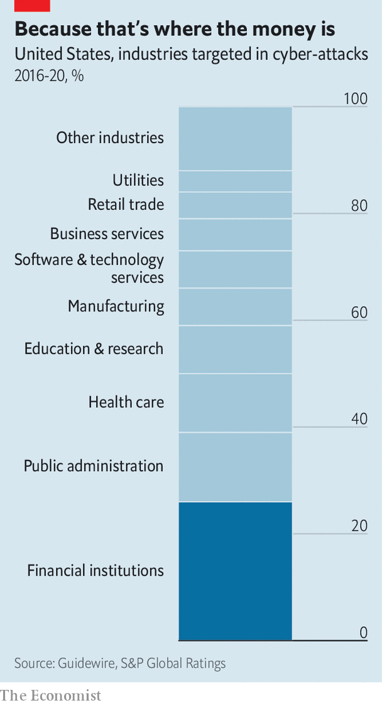
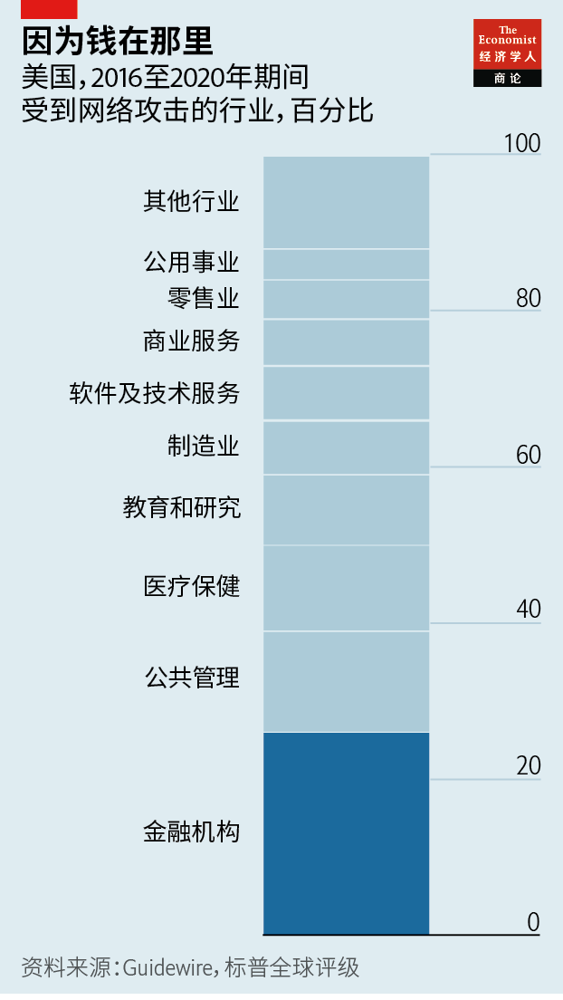

2021-07-07T05:32:04+00:00
Cyber-heists
网络盗窃
網絡盜竊
The methods and menace of the new bank robbers
新一代银行劫匪的手段和威胁
新一代銀行劫匪的手段和威脅
Hacker gangs go after the money—and the data
“黑”帮要钱也要数据
“黑”幫要錢也要數據
TALK TO BANKERS and some will tell you that when it comes to cyber-crime, they are second only to the military in terms of the strength of their defences. And yet trawl the dark web, as Intel 471, an intelligence firm, did on behalf of The Economist in May, and it is obvious that attempts to breach those walls are commonplace. One criminal was detected trying to recruit insiders within America’s three biggest banks, JPMorgan Chase, Bank of America and Wells Fargo, offering a “seven-to-eight-figure” weekly payment to authorise fraudulent wire transfers. Another was auctioning the details of 30m accounts at Bank Mellat in Iran (a country of 83m).
和银行家聊一聊，他们中一些人会告诉你，在防范网络犯罪方面银行的防御力量仅次于军队。然而，就像情报公司Intel 471受本刊委托在5月所做的，搜查暗网会发现，试图突破银行防御的攻击显然很普遍。一名犯罪分子被发现试图从美国最大的三家银行——摩根大通、美国银行和富国银行——招募内部人员，以每周“七到八位数”的高价让他们批准欺诈性电汇。另一名犯罪分子在网上拍卖伊朗国民银行（Bank Mellat）3000万个账户的信息，伊朗的总人口也就8300万。
和銀行家聊一聊，他們中一些人會告訴你，在防範網絡犯罪方面銀行的防禦力量僅次于軍隊。然而，就像情報公司Intel 471受本刊委託在5月所做的，搜查暗網會發現，試圖突破銀行防禦的攻擊顯然很普遍。一名犯罪分子被發現試圖從美國最大的三家銀行——摩根大通、美國銀行和富國銀行——招募內部人員，以每周“七到八位數”的高價讓他們批准欺詐性電匯。另一名犯罪分子在網上拍賣伊朗國民銀行（Bank Mellat）3000萬個賬戶的信息，伊朗的總人口也就8300萬。
Such activity represents the handiwork of a new breed of bank robber. Forget the hold-ups of yore. Today’s smartest hackers are likely to be backed by rogue states, such as North Korea and, to a lesser extent, Iran, or tolerated by countries such as Russia and China. They benefit from unprecedented resources and protection from law-enforcement agencies. As well as attempting to empty accounts, they also target data for insider trading.
这些都是新一代银行劫匪的行径。忘记过去的抢劫方式吧。当今最聪明的黑客很可能受朝鲜和伊朗等流氓国家的直接支持（伊朗支持的程度较轻些），或者很可能被俄罗斯和中国等国容忍。他们获益于前所未有的资源和执法机构的保护。除了试图掏空银行账户，他们还瞄准了用于内幕交易的数据。
這些都是新一代銀行劫匪的行徑。忘記過去的搶劫方式吧。當今最聰明的黑客很可能受朝鮮和伊朗等流氓國家的直接支持（伊朗支持的程度較輕些），或者很可能被俄羅斯和中國等國容忍。他們獲益於前所未有的資源和執法機構的保護。除了試圖掏空銀行賬戶，他們還瞄準了用於內幕交易的數據。
As one of the first industries to offer online transactions, banks have been fending off hackers since the dawn of the internet. They spend more on cyber-security than any other sort of firm—$2,691 per employee—and manage to foil a lot of the attempted thefts. Nonetheless, since 2016, no industry has suffered more from attacks than banks (see chart).
作为最早提供在线交易的行业之一，银行自互联网诞生之日起就一直在抵御黑客。它们在网络安全上的投入比其他任何类型的企业都要多（平均每个员工的网络安全支出为2691美元），并成功挫败了许多盗窃企图。尽管如此，自2016年以来，银行业遭受的网络攻击仍多过任何其他行业（见图表）。
作為最早提供在線交易的行業之一，銀行自互聯網誕生之日起就一直在抵禦黑客。它們在網絡安全上的投入比其他任何類型的企業都要多（平均每個員工的網絡安全支出為2691美元），並成功挫敗了許多盜竊企圖。儘管如此，自2016年以來，銀行業遭受的網絡攻擊仍多過任何其他行業（見圖表）。
Speaking to Congress in May, Jane Fraser, who runs Citigroup, a Wall Street giant, called hacks the biggest threat to America’s financial system. Jamie Dimon of JPMorgan Chase has said they could become “an act of war”. The result is that banks are under constant pressure to prepare for the worst. “It’s not a matter of ‘if’, it’s a matter of ‘when’,” says the head of cyber-security at a central bank. The bankers need to know the methods and motives of their enemies. What have they learned and can they remain a step ahead?
5月，华尔街巨头花旗集团的老板简·弗雷泽（Jane Fraser）在出席国会听证会时表示，黑客攻击是美国金融体系面临的最大威胁。摩根大通的杰米·戴蒙（Jamie Dimon）曾表示，黑客袭击可变成“战争行为”。结果是银行一直承受着为最坏情况做好准备的压力。“这不是‘如果’的问题，而是‘何时’的问题。”一家央行的网络安全负责人说。银行家需要了解敌人的手段和动机。那么他们已经了解到了些什么？能否先敌一步呢？
5月，華爾街巨頭花旗集團的老闆簡·弗雷澤（Jane Fraser）在出席國會聽證會時表示，黑客攻擊是美國金融體系面臨的最大威脅。摩根大通的傑米·戴蒙（Jamie Dimon）曾表示，黑客襲擊可變成“戰爭行為”。結果是銀行一直承受着為最壞情況做好準備的壓力。“這不是‘如果’的問題，而是‘何時’的問題。”一家央行的網絡安全負責人說。銀行家需要了解敵人的手段和動機。那麼他們已經了解到了些什麼？能否先敵一步呢？
As in other industries, attempts to rob banks online generally start with “phishing”, or tricking an employee into downloading a benign-looking software, known as a “Trojan”, that, once installed, creates a backdoor for other viruses to infect the company’s systems. The ruses can be elaborate. In 2019, when hackers infiltrated Redbanc, an interbank network connecting Chile’s ATM system, they faked a lengthy hiring process, complete with rounds of video interviews, just to fool one victim into downloading and running a Trojan.
与对其他行业发动的攻击一样，在网上抢劫银行通常都从“网络钓鱼”开始，也就是诱骗某个员工下载看似无害的软件。一旦安装了这种“特洛伊木马”，它就会为其他病毒创建后门，从而感染公司的整个系统。整个诡计可能煞费苦心。2019年，黑客入侵连接智利ATM系统的银行间网络Redbanc时，伪造了一个包括多轮视频面试的漫长招聘过程，只为骗到一名受害者下载并运行特洛伊木马。
與對其他行業發動的攻擊一樣，在網上搶劫銀行通常都從“網絡釣魚”開始，也就是誘騙某個員工下載看似無害的軟件。一旦安裝了這種“特洛伊木馬”，它就會為其他病毒創建後門，從而感染公司的整個系統。整個詭計可能煞費苦心。2019年，黑客入侵連接智利ATM系統的銀行間網絡Redbanc時，偽造了一個包括多輪視頻面試的漫長招聘過程，只為騙到一名受害者下載並運行特洛伊木馬。
Once the backdoor is installed, the hackers have numerous modi operandi. These have evolved over time. In the early to mid-2010s a popular tactic was to alter banks’ databases to inflate balances on existing accounts in order to drain them with fraudulent online transfers. Another was to steal the names and passwords of employees authorised to access SWIFT, the interbank messaging system that banks use for international transfers, in order to make fraudulent transfers to the robbers’ own bank accounts. In the world’s biggest cyber-heist, in 2016, thieves transferred funds from an account the Bangladeshi central bank held at the Federal Reserve Bank of New York to banks in the Philippines, Sri Lanka and other parts of Asia. They stole $81m.
一旦安装了后门，黑客就有很多种作案手法。这些手法还在不断发展。2010年之后的几年里，流行的手法是更改银行的数据库，增加现有账户的余额，通过欺诈性在线转账抽空这些账户。另一种方法是窃取有权使用SWIFT（银行在国际汇款时使用的银行间消息系统）的员工的用户名和密码，以向黑客自己的银行账户发起欺诈性转账。在2016年世界上最大的网络黑客盗窃案中，窃贼将孟加拉国央行在纽约联邦储备银行账户里的资金转到了菲律宾、斯里兰卡和亚洲其他地区的银行。他们共盗取了8100万美元。
一旦安裝了後門，黑客就有很多種作案手法。這些手法還在不斷發展。2010年之後的幾年裡，流行的手法是更改銀行的數據庫，增加現有賬戶的餘額，通過欺詐性在線轉賬抽空這些賬戶。另一種方法是竊取有權使用SWIFT（銀行在國際匯款時使用的銀行間消息系統）的員工的用戶名和密碼，以向黑客自己的銀行賬戶發起欺詐性轉賬。在2016年世界上最大的網絡黑客盜竊案中，竊賊將孟加拉國央行在紐約聯邦儲備銀行賬戶里的資金轉到了菲律賓、斯里蘭卡和亞洲其他地區的銀行。他們共盜取了8100萬美元。
Ransomware attacks, such as those common elsewhere in business, are on the rise. But banks are exposed in other ways, too. One example is “jackpotting”, where malware manipulates ATMs into spitting out lots of cash, accessible to fake cards, even if no funds exist. Thieves then hire packs of money mules, typically from local mafias, to stage multiple withdrawals at once. Using such methods, in 2018 criminals got away with $13.5m from India’s Cosmos Bank through 15,000 cash-machine withdrawals in just two hours.
在其他商业领域常见的勒索软件攻击行为正在增加。但银行还面对一些其他的攻击方式。比如“吐钞攻击”：用伪造的银行卡通过恶意软件操纵ATM机吐出大量现金，哪怕这些假卡里根本没有钱。然后窃贼会雇用一帮“钱骡子”同时多次取款，这些“钱骡子”通常都是当地的黑帮成员。2018年，犯罪分子通过这种方法在短短两个小时内从印度Cosmos银行的ATM机上取款1.5万次，窃得1350万美元。
在其他商業領域常見的勒索軟件攻擊行為正在增加。但銀行還面對一些其他的攻擊方式。比如“吐鈔攻擊”：用偽造的銀行卡通過惡意軟件操縱ATM機吐出大量現金，哪怕這些假卡里根本沒有錢。然後竊賊會僱用一幫“錢騾子”同時多次取款，這些“錢騾子”通常都是當地的黑幫成員。2018年，犯罪分子通過這種方法在短短兩個小時內從印度Cosmos銀行的ATM機上取款1.5萬次，竊得1350萬美元。
Another tactic is to turn websites that banks visit regularly into poisoned “watering holes”, most infamously in 2017 when criminals successfully targeted 104 mostly financial firms in 31 countries, including seven banks in Britain and 15 in America. In this case the websites of central banks in Poland, Mexico and others were booby-trapped so that banks would download malicious files and infect themselves with malware. These could be used to spy on the banks, steal their data and ultimately make fraudulent transfers (though in most cases the intrusion appears to have been discovered before money was stolen).
另一种手段是将银行定期访问的网站变成有毒的“水坑”，最臭名昭著的水坑攻击发生在2017年，犯罪分子成功攻击了31个国家的104家企业，其中大多数是金融机构，包括七家英国银行和15家美国银行。在这次攻击中，波兰、墨西哥和其他一些国家的央行网站被设下水坑陷阱，引导银行下载恶意文件，进而感染自己的系统。通过这些恶意软件可以监视银行，窃取它们的数据，并最终发起欺诈性汇款（尽管在大多数情况下，银行似乎都在资金被盗之前发现了系统被入侵）。
另一種手段是將銀行定期訪問的網站變成有毒的“水坑”，最臭名昭著的水坑攻擊發生在2017年，犯罪分子成功攻擊了31個國家的104家企業，其中大多數是金融機構，包括七家英國銀行和15家美國銀行。在這次攻擊中，波蘭、墨西哥和其他一些國家的央行網站被設下水坑陷阱，引導銀行下載惡意文件，進而感染自己的系統。通過這些惡意軟件可以監視銀行，竊取它們的數據，並最終發起欺詐性匯款（儘管在大多數情況下，銀行似乎都在資金被盜之前發現了系統被入侵）。
Sometimes it is data, not money, that the robbers are after. The latest trick is to steal financial-market data from within banks in order to facilitate insider trading. A survey by VMware, a cyber-security firm, of 126 financial firms worldwide found that 51% saw a rise in such attacks last year. Portfolio managers in America and Britain that were recently breached saw suspicious activity whenever they were about to trade, says Tom Kellermann, the firm’s strategy boss.
有时，窃贼瞄上的是数据而不是钱。他们最新的伎俩是从银行内部窃取金融市场数据，便于他们进行内幕交易。网络安全公司威睿（VMware）对全球126家金融公司展开的一项调查发现，51%的公司去年遭受的此类攻击有所增加。威睿的战略主管汤姆·凯勒曼（Tom Kellermann）表示，近期受过黑客入侵的美国和英国投资组合管理公司在每次交易前都会发现可疑活动。
有時，竊賊瞄上的是數據而不是錢。他們最新的伎倆是從銀行內部竊取金融市場數據，便於他們進行內幕交易。網絡安全公司威睿（VMware）對全球126家金融公司展開的一項調查發現，51%的公司去年遭受的此類攻擊有所增加。威睿的戰略主管湯姆·凱勒曼（Tom Kellermann）表示，近期受過黑客入侵的美國和英國投資組合管理公司在每次交易前都會發現可疑活動。
The multiplicity of methods is compounded by the malevolence of those involved. Originally heists were mostly conducted by private thieves from former Soviet states. They included Carbanak, a notorious syndicate that stole over $1bn from 100 banks after 2013 (its masterminds were arrested in 2018). But since America cut North Korea out of its financial system in 2017, the hermit state has doubled down on its relationship with criminal gangs as a way of “making profit and evading sanctions”, says Michael D’Ambrosio, a top investigator in America’s secret service. Variously named Lazarus, Bluenoroff or BeagleBoyz, such state-sponsored entities have access to vastly more resources and personnel than mere criminals. Their members often live under cover in Russia and China, says Mark Arena of Intel 471. An indictment by America’s Department of Justice published in January accuses two individuals, linked to a North Korean military intelligence agency, of attempting to steal more than $1.3bn via cyber-enabled bank heists and ATM raids, as well as extorting cryptocurrency companies.
作案手法之多，再加上参与其中的势力抱持的恶意，让情况更为复杂。最初的网络大盗主要是前苏联国家的民间窃贼。其中包括臭名昭著的卡巴纳克（Carbanak）黑客组织，它在2013年之后从100家银行窃得10亿多美元（其主谋于2018年被捕）。但自美国于2017年将朝鲜从其金融体系中孤立出去之后，这个隐秘国家加大了与犯罪团伙的联系，借此“牟利并逃避制裁”，美国特勤局高级调查员迈克尔·丹布罗西奥（Michael D’Ambrosio）说。比起一般的犯罪分子，Lazarus、Bluenoroff或BeagleBoyz等名目繁多、受国家支持的黑客组织能获得的资源和人力要多得多。组织成员经常隐匿在俄罗斯和中国，Intel 471的马克·阿雷纳 （Mark Arena）表示。根据美国司法部1月公布的一份起诉书，美国已指控两名与朝鲜军事情报机构有关联的人员意图通过网络银行抢劫、入侵ATM机及敲诈加密货币公司的方式窃取超过13亿美元的传统货币和加密货币。
作案手法之多，再加上參與其中的勢力抱持的惡意，讓情況更為複雜。最初的網絡大盜主要是前蘇聯國家的民間竊賊。其中包括臭名昭著的卡巴納克（Carbanak）黑客組織，它在2013年之後從100家銀行竊得10億多美元（其主謀於2018年被捕）。但自美國於2017年將朝鮮從其金融體系中孤立出去之後，這個隱秘國家加大了與犯罪團伙的聯繫，藉此“牟利並逃避制裁”，美國特勤局高級調查員邁克爾·丹布羅西奧（Michael D’Ambrosio）說。比起一般的犯罪分子，Lazarus、Bluenoroff或BeagleBoyz等名目繁多、受國家支持的黑客組織能獲得的資源和人力要多得多。組織成員經常隱匿在俄羅斯和中國，Intel 471的馬克·阿雷納 （Mark Arena）表示。根據美國司法部1月公布的一份起訴書，美國已指控兩名與朝鮮軍事情報機構有關聯的人員意圖通過網絡銀行搶劫、入侵ATM機及敲詐加密貨幣公司的方式竊取超過13億美元的傳統貨幣和加密貨幣。
Moreover, rogue states often form joint ventures with private gangs. One of them, a Russian-speaking outfit that operates an infamous Trojan-for-hire called Trickbot, provides access to many infected computers. Some cyber experts were shocked recently when they found that it had been used in conjunction with North Korean malware in recent attacks.
此外，流氓国家经常与犯罪团伙联手。其中一个讲俄语的组织运行着一个名为Trickbot的可自定义木马程序，这个臭名昭著的程序允许攻击者访问众多受感染的计算机。一些网络专家近来震惊地发现，这一程序与朝鲜的恶意软件一道部署在近年的网络攻击中。
此外，流氓國家經常與犯罪團伙聯手。其中一個講俄語的組織運行着一個名為Trickbot的可自定義木馬程序，這個臭名昭著的程序允許攻擊者訪問眾多受感染的計算機。一些網絡專家近來震驚地發現，這一程序與朝鮮的惡意軟件一道部署在近年的網絡攻擊中。
It is not clear how much money drains out of the back door. Numbers crunched by Advisen, a consultancy, suggest banks have lost about $12bn to cybercrime since 2000, around three-quarters of which have come from data breaches. Studies suggest every hour of business interruption costs a bank $300,000 on average; a typical data breach causes losses of $6m.
尚不清楚有多少资金从后门流出。咨询公司Advisen的数据显示，自2000年以来，银行因网络犯罪损失了约120亿美元，其中约四分之三是因为数据泄露。研究表明，业务每中断一小时，受影响的银行平均损失30万美元；一次数据泄露事件通常造成600万美元损失。
尚不清楚有多少資金從後門流出。諮詢公司Advisen的數據顯示，自2000年以來，銀行因網絡犯罪損失了約120億美元，其中約四分之三是因為數據泄露。研究表明，業務每中斷一小時，受影響的銀行平均損失30萬美元；一次數據泄露事件通常造成600萬美元損失。
But banks usually forbid staff from discussing such attacks, and the reported numbers dramatically understate the problem. Though many institutions are obliged to report serious hacks to regulators and, sometimes, customers, rules change frequently and vary across jurisdictions, meaning disclosure is haphazard.
但银行通常禁止员工讨论此类攻击，而且公布的损失往往轻描淡写。尽管许多金融机构有义务向监管机构报告严重的黑客攻击（有时对客户也有此义务），但监管规则经常变化，且因司法辖区而异，这意味着信息披露杂乱无章。
但銀行通常禁止員工討論此類攻擊，而且公布的損失往往輕描淡寫。儘管許多金融機構有義務向監管機構報告嚴重的黑客攻擊（有時對客戶也有此義務），但監管規則經常變化，且因司法轄區而異，這意味着信息披露雜亂無章。
Moreover, initial losses can be dwarfed by second-order effects. The average incident puts 27% of customers at high risk of closing down their accounts at a targeted firm, and sinks companies’ share prices by 5-7% on average, says John Meyer of Cornerstone Advisors, a consultancy. A Supreme Court case in Britain this summer could make class-action lawsuits by customers affected by cyber-breaches easier, exposing banks to hundreds of millions of pounds in potential damages.
此外，次级效应可能会让初始损失相形见绌。平均而言，每次网络攻击很可能会让27%的高风险客户关闭它们在被攻击公司的账户，并导致公司股价平均下跌5%至7%，咨询公司基石顾问（Cornerstone Advisors）的约翰·迈耶（John Meyer）表示。今年夏天英国最高法院审理的一宗案件可能会让受数据泄漏影响的客户更容易提起集体诉讼，让银行有可能面临数亿计英镑的赔偿。
此外，次級效應可能會讓初始損失相形見絀。平均而言，每次網絡攻擊很可能會讓27%的高風險客戶關閉它們在被攻擊公司的賬戶，並導致公司股價平均下跌5%至7%，諮詢公司基石顧問（Cornerstone Advisors）的約翰·邁耶（John Meyer）表示。今年夏天英國最高法院審理的一宗案件可能會讓受數據泄漏影響的客戶更容易提起集體訴訟，讓銀行有可能面臨數億計英鎊的賠償。
Not everything is going the criminals’ way, though. Forensic firms are doing a good job of attributing attacks to specific hacking groups, and intelligence agencies at linking web handles to real people. Some gangs are neutralised or caught. In September the American army launched a cyber offensive that weakened TrickBot, the North Korea-backed Trojan. In January Ukrainian police, in an operation with European and American counterparts, arrested the thieves running Emotet, another botnet allegedly responsible for at least $2.5bn in theft since 2014.
不过，窃贼们也并非高枕无忧。金融取证公司追查具体是哪个黑客组织发动了攻击，情报机构把网名与真人对上号，两者都表现出色。一些团伙被瓦解或抓捕。去年9月，美国军方在网上发起攻势，削弱了朝鲜支持的特洛伊木马程序TrickBot。今年1月，乌克兰警方与欧洲和美国警方联合行动，逮捕了运行Emotet的网络大盗，Emotet也是一个僵尸网络，据称自2014年以来盗窃了至少25亿美元。
不過，竊賊們也並非高枕無憂。金融取證公司追查具體是哪個黑客組織發動了攻擊，情報機構把網名與真人對上號，兩者都表現出色。一些團伙被瓦解或抓捕。去年9月，美國軍方在網上發起攻勢，削弱了朝鮮支持的特洛伊木馬程序TrickBot。今年1月，烏克蘭警方與歐洲和美國警方聯合行動，逮捕了運行Emotet的網絡大盜，Emotet也是一個殭屍網絡，據稱自2014年以來盜竊了至少25億美元。
Banks strive to build nimbler fortifications and hire friendly “white-hat” hackers to probe their own defences. The biggest are spending more: in June Bank of America said it would invest $1bn annually to counter mounting threats. A survey by Deloitte found that financial firms spent an average 0.48% of their revenue on cyber-security last year, up from 0.34% in 2019. Applied to the industry’s total revenue in 2020, that would make for $23bn-worth in spending in America alone.
银行在努力打造更灵活的防御工事，并聘请友好的“白帽”黑客来排查自己的系统。规模最大的那些银行投入更多，比如美国银行就在6月表示它将每年投入10亿美元应对日益严重的网络威胁。德勤的一项调查发现，金融企业去年在网络安全方面的投入平均占收入的0.48%，高于2019年的0.34%。按2020年金融业的总收入来计算，那么网络安全支出仅在美国就达到了230亿美元。
銀行在努力打造更靈活的防禦工事，並聘請友好的“白帽”黑客來排查自己的系統。規模最大的那些銀行投入更多，比如美國銀行就在6月表示它將每年投入10億美元應對日益嚴重的網絡威脅。德勤的一項調查發現，金融企業去年在網絡安全方面的投入平均占收入的0.48%，高於2019年的0.34%。按2020年金融業的總收入來計算，那麼網絡安全支出僅在美國就達到了230億美元。
But things may get worse because, firstly, banks’ networks are becoming costlier to secure. “We recognise that we’re never going to prevent everything,” says the cyber chief of a top American bank. “So we have to have layered defences that assume multiple defences will fail.” The multiplication of internet-connected devices, the digitalisation of banking, and remote working are offering new points of entry for attackers. Akamai, a security firm that serves eight out of the world’s top ten banks, witnessed 736m attacks against financial firms’ web-based applications last year, a two-thirds increase from 2019. The expansion of fintech firms without consistent regulation is creating blind spots. And banks’ migration to the cloud, on paper deemed more secure, could backfire if it ends up concentrating risk on just a few platforms, says Jano Bermudes of Marsh, an insurance broker.
但情况可能会变得更糟，首先是因为维护银行网络安全的成本越来越高。“我们认识到永远不可能做到无懈可击，”美国一家顶尖银行的网络安全主管说，“所以我们必须做分层防御，假定多道防御都会被突破。”联网设备的增加、银行业数字化和远程办公为攻击者提供了新的突破口。阿卡迈科技（Akamai）是一家网络安全公司，全球十大银行有八家是它的客户，该公司去年见证了7.36亿次针对金融企业网络应用的攻击，比2019年增加了三分之二。金融科技公司不断扩张但尚没有统一的监管，正在造成许多盲点。而银行向云端迁移虽然理论上说应该更安全，但如果最终导致风险集中在少数几个平台上，可能就会适得其反，保险经纪公司达信（Marsh）的哈诺·伯尔姆兹（Jano Bermudes ）表示。
但情況可能會變得更糟，首先是因為維護銀行網絡安全的成本越來越高。“我們認識到永遠不可能做到無懈可擊，”美國一家頂尖銀行的網絡安全主管說，“所以我們必須做分層防禦，假定多道防禦都會被突破。”聯網設備的增加、銀行業數字化和遠程辦公為攻擊者提供了新的突破口。阿卡邁科技（Akamai）是一家網絡安全公司，全球十大銀行有八家是它的客戶，該公司去年見證了7.36億次針對金融企業網絡應用的攻擊，比2019年增加了三分之二。金融科技公司不斷擴張但尚沒有統一的監管，正在造成許多盲點。而銀行向雲端遷移雖然理論上說應該更安全，但如果最終導致風險集中在少數幾個平台上，可能就會適得其反，保險經紀公司達信（Marsh）的哈諾·伯爾姆茲（Jano Bermudes ）表示。
Secondly, the criminals have more resources—both technological and financial—at their disposal. According to security experts, they mainly focus on expelling intruders before they have time to loot. Yet, says one, soon hackers are likely to use artificial intelligence to shorten an attack from start to finish—the “kill chain” in the jargon. Cyber-gangs are also growing rich. Maze, one of them, announced its “retirement” in November after pocketing over $100m in ransoms in a year. Moreover, up-and-coming criminals are attempting to surf on the top tier’s success. Last autumn, hackers posing as Lazarus and Fancy Bear (an infamous Russian group) threatened over 100 financial firms with distributed denial-of-service attacks, in which “botmasters” mobilise vast networks of infected machines to flood their targets with internet traffic if they do not pay a ransom.
其次，现在罪犯们在技术和资金方面都有更多资源可供调遣。安全专家称，他们主要专注在入侵者未及实施抢劫之前将其驱逐。然而，一位专家表示，黑客很可能很快就会利用人工智能来缩短行话称作“网络攻击链”的整个攻击过程。网络犯罪团伙也越来越有钱。其中一个团伙Maze在一年内攫取了超过1亿美元的赎金后，于去年11月宣布“隐退”。此外，新冒头的势力正在试图借用同行大佬的名头。去年秋天，有黑客冒充Lazarus和Fancy Bear（“奇幻熊”，一个臭名昭著的俄罗斯黑客组织）对100多家金融公司发出威胁，如果它们不付赎金，就对它们发出分布式拒绝服务攻击，也就是由“僵尸网络操控者”操纵巨量被感染的计算机网络，用大规模互联网流量淹没目标。
其次，現在罪犯們在技術和資金方面都有更多資源可供調遣。安全專家稱，他們主要專註在入侵者未及實施搶劫之前將其驅逐。然而，一位專家表示，黑客很可能很快就會利用人工智能來縮短行話稱作“網絡攻擊鏈”的整個攻擊過程。網絡犯罪團伙也越來越有錢。其中一個團伙Maze在一年內攫取了超過1億美元的贖金後，於去年11月宣布“隱退”。此外，新冒頭的勢力正在試圖借用同行大佬的名頭。去年秋天，有黑客冒充Lazarus和Fancy Bear（“奇幻熊”，一個臭名昭著的俄羅斯黑客組織）對100多家金融公司發出威脅，如果它們不付贖金，就對它們發出分布式拒絕服務攻擊，也就是由“殭屍網絡操控者”操縱巨量被感染的計算機網絡，用大規模互聯網流量淹沒目標。
Such hackers can count on thriving secondary markets to monetise their loot. On ToRReZ, an eBay lookalike that The Economist recently visited via an ultra-private browser, credit-card details go for $25 a pop—or four for the price of three. For $4.99, a tutorial offers help in building phishing websites copying those of Barclays, a British bank. Purchases are paid in cryptocurrencies that can be cashed out in bank accounts opened with fake IDs (a driving licence from Tennessee costs $150, for instance). The new bank robbers are as criminally entrepreneurial as ever.
这些黑客可以依靠兴旺的二级市场来将赃款变现。本刊最近通过一个超私密浏览器访问了一个相当于eBay的网站ToRReZ，在这里信用卡账户信息的价格为每张25美元，还能买三送一。只需4.99美元就可以买到教程，教你创建仿冒英国巴克莱银行的钓鱼网站。支付用的是加密货币，可以通过用假身份证件（比如150美元一张的田纳西州驾照）开设的银行账户兑现。新一代银行劫匪在作案道路上冒险进取的精神一如既往。
這些黑客可以依靠興旺的二級市場來將贓款變現。本刊最近通過一個超私密瀏覽器訪問了一個相當於eBay的網站ToRReZ，在這裡信用卡賬戶信息的價格為每張25美元，還能買三送一。只需4.99美元就可以買到教程，教你創建仿冒英國巴克萊銀行的釣魚網站。支付用的是加密貨幣，可以通過用假身份證件（比如150美元一張的田納西州駕照）開設的銀行賬戶兌現。新一代銀行劫匪在作案道路上冒險進取的精神一如既往。